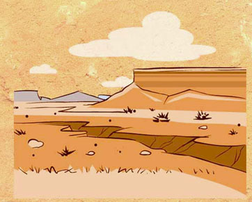

A Hopi woman by the name of Dextra Quotskuyva made this seed jar. She belongs to a family of well-known potters by the name of Nampeyo.
Dextra Quotskuyva is a member of the Pueblo group called the Hopi. The Hopi live on the mesas of the southwestern United States.
It's dry and hot there; the climate is arid.